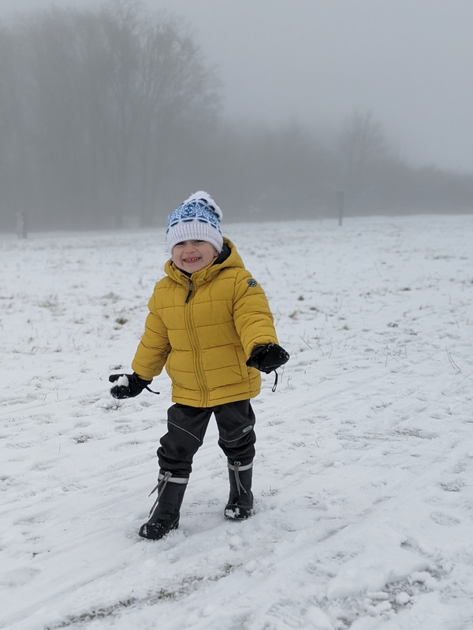
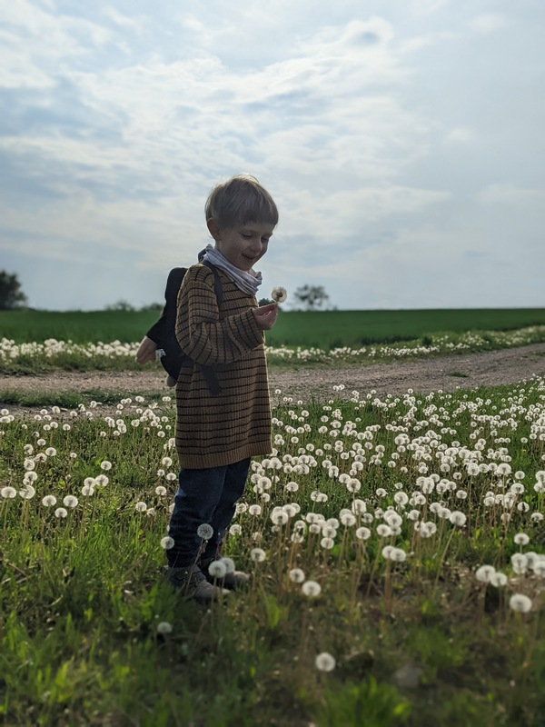

Další rok plný novinek a zlomů je za námi a já si ho sem jdu pro radost zaznamenat, protože děti rostou tak rychle a zítra už to všechno určitě zase nebude pravda :-)
- Oli ve čtyřech letech váží 15,5 kila a nosí oblečení v rozmezí velikostí 104-116.
- Největším milníkem uplynulého roku byl bezpochyby můj návrat do práce a Oliho nástup do školky. Obavy byly přirozeně na místě, ale zároveň jsem si byla jistá, že O. pobyt v kolektivu skvěle zvládne. Naše dětská skupinka, do které dochází, je spíše komorní, a přístup personálu i celková atmosféra zcela splňuje má očekávání o předškolní péči. O. se okamžitě začlenil a našel si tam spoustu nových kamarádů, ve školičce tráví čas rád a to je pro mne klíčové. Tety ho často chválí, jak je komunikativní a jaký má rozhled. Zároveň se i moc hezky chová k ostatním dětem.
- Uplynulou zimu jsme ho poprvé postavili na lyže a docela ho to i bavilo. Příští rok se opět chystáme na Ramzovou, tak určitě využijeme místní lyžařskou školičku. Pod stromečkem taky O. objevil opravdové šlapací kolo - uvidíme, jak mu to na něm půjde :-)
- Co se týče spaní, od té doby, co chodí O. do školky, už na jeho odpoledním spánku nijak nelpím. Občas si ještě rád odpoledního šlofíčka dá, jindy máme nabitý program a zvládne to až do večera i bez něj. Funguje nám večerka okolo 8. hodiny - budíček pak zpravidla bývá okolo šesté, klasika :-D Ale snažím se si nestěžovat, protože v období změny času se nám pravidelně budíval hned po páté :-D
- Co se týče jídla, asi u nás žádné velké změny neproběhly. Oli je pořád vděčný strávník, který miluje polévky, maso, lososa, mléko, jogurty a samozřejmě všechno sladké - od knedlíků přes kompoty až po gumové medvídky. Na pečivo moc není, stejně tak šunku si dá spíš sporadicky, ale už vzal trochu na milost sýry. Samozřejmě se všemožně snažím omezovat sladkosti, ale zároveň mu je nechci nijak striktně zakazovat. Spíš se snažím jít cestou zdravějších alternativ a samozřejmostí je každý den nějaké ovoce či zelenina. Myslím, že v porovnání s jinými dětmi se O. stravuje pořád velice zdravě.
- Díky školce jsme zase udělali velký posun v samoobslužnosti - zejména co se týče oblékání, hygienických návyků a podobně.
- Mým aktuálně nejambicioznějším cílem je zbavit O. plen na spaní. Často přemýšlím nad tím, že by je už třeba dávno nepotřeboval, kdybych mu je prostě ze dne na den přestala dávat. Na druhou stranu mě v tuto chvíli neláká představa obden měnit ložní prádlo a jinak v tomto směru experimentovat. Věřím, že přes léto bude příznivá konstelace a nějak to dáme :-)
- Mrzí mě, že co jsem v práci, nemám už tolik času ani energie připravovat pro O. různé tvořivé aktivity jako dřív, ač vím, že je má tak rád. Ve školce ale samozřejmě často také malují a tvoří. Doma teď už druhým rokem odebíráme časopis Puntík - v něm je také spousta hezkých kreativních nápadů. Perfektní samolepkové sešity kupuji čas od času Olimu v Tigeru a dvě lepící sady od značky Djeco dostal i k Vánocům a narozeninám - lepení je prostě u nás pořád top :-) A pak taky naprosto milujeme pískové omalovánky - ty většinou objednáváme z Aliexpressu.

- Tak co myslíte, pominula u nás za ten rok Oliho záliba v mašinkách :-)? Samozřejmě ani o píď! Naopak se jeho znalosti ještě více prohloubily - jsem pořád stejně fascinovaná tím, jak dokáže od sebe rozeznat všelijaké mašinky, které na první pohled vypadají naprosto stejně. Za Péťovy body na Inkartě jsme O. předplatili (nesmějte se) šotoušský měsíčník " Železničář". Ten když objevíme ve schránce, tak je to pro nás radost největší a čteme si v něm a listujeme až do večera. Na FB už sleduju všelijaké železničářské spolky a nedočkavě vyhlížím nejrůznější akce, které by se Olimu mohly líbit, ať už jde o modelářské výstavy či historické jízdy. V Modelovém světě na Josefské už máme věrnostní kartu :-D
- Mezi nejoblíbenější hračky (krom vláčkodráhy, samozřejmě) aktuální patří lego, puzzle a krájecí zelenina, nejvíc ze všeho teď ale Oliho baví hrát nejrůznější společenské hry, ať už jde o pexesa, kvarteta, zjednodušené verze Člověče, nezlob se, Kloboučku hop nebo karetní Prší. Rádi také využíváme možnosti půjčování her v místní knihovně - ušetříme tak dost peněz i prostoru doma a můžeme stále zkoušet něco nového.
- Registrace do knihovny pro nás vůbec byla obrovským milníkem! Odhodlala jsem se k tomu loni na jaře, když veřejné knihovny byly jednou z prvních institucí, která se lidem po pandemii otevřela. Trochu jsem váhala, jestli už je na to O. dostatečně “zralý”, ale tím, jak je na knihy odmalička zvyklý a chová se k nim hezky, to byly zbytečné obavy. V knihovně jsme od té doby stálými hosty a nové knihy už prakticky nekupuju.
- Už někdy před rokem, kdy začal Oli projevovat první zájem o písmena, jsem mu pořídila dřevěnou vkládací abecedu. Od té doby spolehlivě pozná všechna písmena a dokáže i říct příklad slova, které na dané písmeno začíná.
- Na podzim se O. začal hodně zajímat o lodě (myslím, že to odstartoval klip k písni My heart will go on, který mu Péťa často pouštěl :-D) a také o vesmír a kosmické rakety. I tady se brzo začal projevovat jeho smysl pro detail, který už dobře známe v souvislosti s mašinkami. V různých encyklopediích bezpečně pozná raketu, ve které vzlétl do vesmíru Gagarin, nebo lunární modul, který poprvé přistál na měsíci. Zná dokonce i jména několika amerických kosmonautů :-D Vždycky se snažím jeho aktuálním zájmům vycházet vstříc a nabízet mu knížky, ale třeba i tvoření s tematikou, která je mu zrovna blízká.

- Hrozně hezký zpívá a už si fakt říkám, že ho musím přihlásit na nějaký hudební kroužek. Nedávno jsme vyrazili na první koncert do divadla (na Smejka a Tanculienku :-) a bylo úžasný pozorovat, jak si to užívá, řádí a zplna hrdla zpívá.
- Aniž bych ho s tím někdy nějak zvlášť “buzerovala”, většinou už celkem automaticky zdraví, prosí i děkuje. Nemá problém přijít s omluvit se, pokud něco vyvede. A umí i zalichotit! Když se vrátím od kadeřníka, nikdy nezapomene říct: “Vypadáš krásně, mami!” :-D
- Nikdy jsem zatím v mateřství neměla takové to období, že bych si přála zastavit čas. Vždycky jsem se těšila na nějaké další “AŽ”, na nějaký milník, s nímž náš život bude jednodušší. Nevím, jestli je to tím návratem do práce a tím, že je mi čas s Olim najednou mnohem vzácnější, ale každý den s ním mě teď tak moc baví! O. už je opravdový parťák, dá se toho s ním spousta podnikat, dokážeme se už ale spolu i na spoustě věcech domluvit a vyjít si vstříc, když zrovna jeden z nás nemá svůj den. A i když jsou i tak některé dny pořád náročné, nakonec stejně odpadám do postele s nesmírnou vděčností za to, že ho máme <3